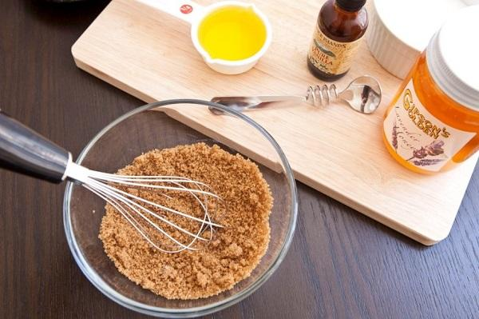
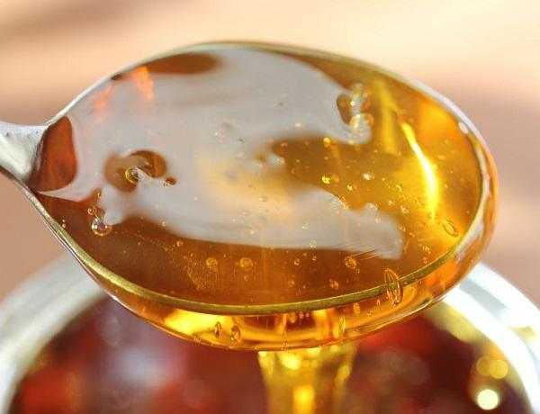

Hôm nay BreadTalksẽ hướng dẫn bạn cách phân biệt các loại đường dùng để làm bánh nhé! Đường là nguyên liệu tạo nên sự ngọt ngào quyến rũ cho các loại bánh ngọt, thế nên nói đến nguyên liệu làm bánh không thể không nhắc tới đường. Hiện nay có rất nhiều loại đường làm bánh, mỗi loại lại hợp với những kiểu bánh khác nhau.
Đường trong làm bánh có tác dụng gì?
- Tạo độ mềm mịn cho kết cấu của bánh.
- Tạo vị ngọt và mùi thơm cho bánh.
- Giữ ẩm cho bánh, giúp bánh giữ được chất lượng lâu hơn.
- Tạo màu sắc vàng đẹp cho vỏ bánh.
- Là “thức ăn” cho men.
- Kết hợp với chất béo (bơ, shortening) để làm kem hoặc đánh cùng trứng tạo sự bông mượt.

Có 4 loại đường cơ bản dùng trong làm bánh, bao gồm:
1. Granulated sugar (đường kính)
Đường kính là một loại đường vô cùng phổ biến có thể tìm mua ở bất cứ đâu. Loại này có tên gọi chung của 2 loại đường là Ultrafine sugar và Sanding sugar (coarse sugar).
Sanding sugar (coarse sugar) là một loại đường có hạt to hơn, chuyên dùng để rắc bên ngoài bánh hoặc cookies, chúng có tác dụng trang trí là chủ yếu. Trong khi đó Ultrafine sugar lại là một loại đường hạt rất nhỏ và mịn, loại này thường dùng để làm các loại bánh bông xốp, cookies.
2. Confectioner’s/Powder/Icing sugar (đường bột)
Đường bột là loại đường vô cùng quen thuộc với các thợ làm bánh. Loại đường này không ở dạng hạt mà có dạng bột mịn, màu trắng tinh và rất dễ nhận biết so với các loại đường khác. Loại đường này thường được dùng để làm lớp phủ bánh hoặc dùng trang trí các loại bánh Âu khác.
3. Brown sugar (đường nâu)
Đường nâu có màu nâu, dạng hạt. Có 2 loại đường nâu là đường nâu nhạt (light brown sugar) và đường nâu đậm (dark brown sugar).Bên cạnh đó còn có một số loại đường khác như đường chưa qua tinh luyện và đường đã qua tinh luyện. Do điều kiện bảo quản hoặc tùy loại đường có độ ẩm cao hay thấp mà bạn có cách bảo quản đường nâu khô hay ẩm. Khi đong loại đường này bạn cũng nên nén chặt đường sau đó lấy đủ đến vạch yêu cầu trên cup nhé.

4. Các loại siro (syrups)
Đường siro là một dạng đường lỏng có thành phần chủ yếu là đường và nước, chúng được thêm một số vị khác như chocolate hay strawberry,…để tạo hương vị riêng.
Có một số loại syrup phổ biến dùng trong làm bánh như: Molasses (mật mía) được chiết xuất từ cây mía. Corn syrup là loại có tác dụng tạo độ ẩm và độ mềm cho bánh. Malt syrup (mạch nha) được sử dụng nhiều khi làm các loại bánh mì có men. Honey (mật ong) là loại đường lỏng tự nhiên và có tác dụng giữ ẩm cho bánh cũng như tạo mùi thơm đặc biệt.

Trên đây là một số loại đường vàcách phân biệt các loại đườngdùngtrong làm bánh. Chúc các bạn làm bánh thật ngon nhé!